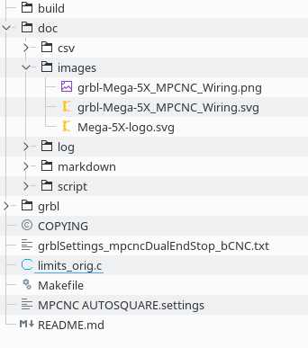
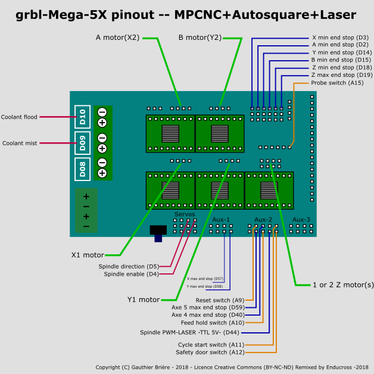
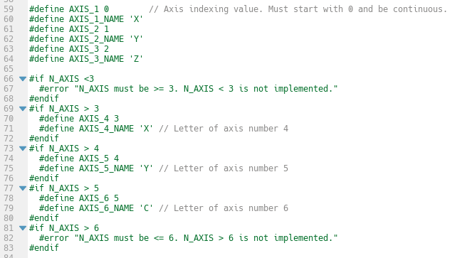
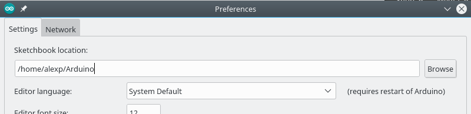
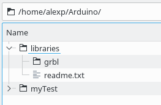
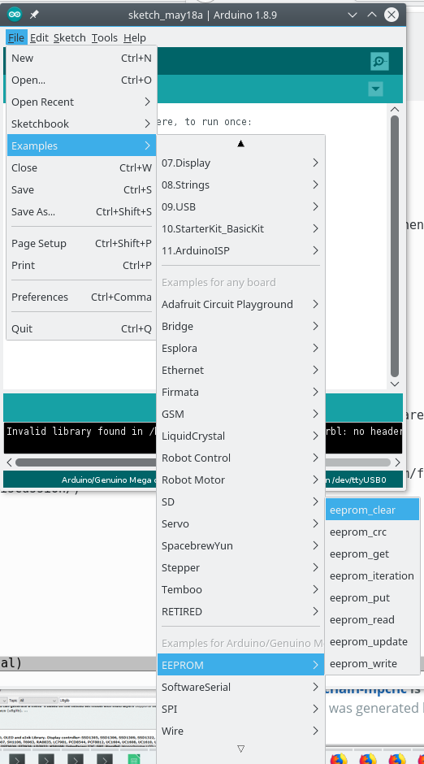

Spotlight on
Controller & firmware option B):
grbl on Ramps – dual-end-stop, auto-squaring
detailed walk through
Step1 – get the firmware
- Either download the rar file from Pablo here or this version from Johns gitHub.
- Unpack / browse into the downloaded stuff
-
The contents should look like this (except the grblSettings_mpcncDualEndStop_bCNC.txt which is not in the Johns repo yet, but can be found in this repo ): 
-
doc/images has the wiring description
Nothing to be changed with your wiring; just in case you wonder or want to add some extra stuff)

Step2 - configure the firmware
grbl/config.h
In the folder grbl open config.h → you should be able to configure everything in here. Do not mess around in e.g. limits.c as sometimes proposed as you will be loosing the possibility to easily follow main branch development.
Very basics
grbl-mega-5x allows you to use 5 (or even 6) axis. We have the axis definitions in line 59ff.:

Per axis, there's a definition of the bit (we'll need this later on to be used with the masks) and a name, e.g. line 59/60 for 'X' .
For our mpcnc gantry setup, we have 5 axis - originally named x, y, z, a, b in grbl-mx5. These have been renamed to x, y, z, x (cloned x, bit 4) , y (cloned y, bit 5) - I will refer to the latter two as xc and yc.
End stop configuration - background
Go to line 261.
End stops in grbl defaults to normally open (NO). I think the reason is that you don't need to jumper the pins of the unused ports tied to gnd.
The mpcnc default for end stops however is (and I think this is sensible, see Ryans arguments) normally closed (NC). This means using grbl as is, you'll get all end stops firing an alarm when NOT triggered.
End stop configuration - $5 not working as intended ↯
We normally would use grbl's configuration command $5=1, which inverts ALL limit pins and could be adapted in the frontend, ess e.g. bCNC settings.
Unfortunately this does NOT work (I tried it and alarms I could not get rid of).
End stop configuration - solution: invert individual pins
Fortunately, there exists (in line 264) #define INVERT_MIN_LIMIT_PIN_MASK, which allows us to invert the necessary pins individually:
We'll be using our knowledge about the AXIS_n definition we had learned about previously and set (Note: this is only necessary if you use your endstops in NC; for NO leave it commented out!)
#define INVERT_MIN_LIMIT_PIN_MASK ((1<<AXIS_1) | (1<<AXIS_2) | (1<<AXIS_4) | (1<<AXIS_5))
This, by the way, also allows you to leave the unused pins (e.g. ZMIN, ZMAX in my case) open. Unfamiliar with bitmasks? Have a read.
If you are curious how it's applied, have a read in limits.c line 192ff limits_get_state().
As already stated above: please use config.h to tweak things and do not mess around in .c files whenever possible.
Step3 – flash the firmware
Copy the firmware to libraries
- start Arduino IDE
- at File>Preferences have a look at Sketchbook location for me /home/alexp/Arduino

- copy the complete folder grbl in there below the libraries folder

Clear EEPROM
This is necessary as grbl stores the settings in EEPROM and sometimes left over data might lead to problems.
Flash the File>Examples>(all the way down in the menue)EEPROM>eeprom_clear

This is done as usual as described by Ryan: how to flash firmware (open the example, compile and upload)
FLashback: man, how easy is this - do you remeber the mess in ~year 2k when working with embedded devices from linux (my tutorial back then in y2k)
Flash grbl - in Arduion IDE: File>open> [whereYouHaveIt]/librarries/grbl/Examples/grblUpload.ino - compile - upload
Thats it. After power of/on for the controller board, you should now have a mpcnc with all motors active. Go on to the bCNC tutorial.
Feel free to dicuss your questions in the related discussion thread